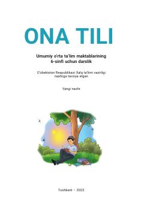

OT6-sinf o'quvchilari uchun ona tili fanidan rasmiy darslik.
Ushbu darslik umumiy o'rta ta'lim maktablarining 6-sinf o'quvchilari uchun mo'ljallangan bo'lib, ona tili fanidan chuqur bilim berishga qaratilgan. Kitobda til va muloqot vositasi, nutq turlari, so'z boyligi hamda imlo qoidalariga oid nazariy va amaliy mashg'ulotlar o'rin olgan. Shuningdek, o'quvchilarning og'zaki va yozma savodxonligini oshiruvchi turli matnlar va topshiriqlar berilgan.